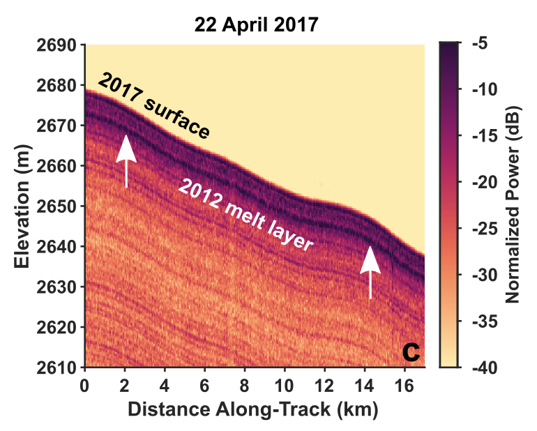

Near-Surface Glacial Hydrology and Climate
Understanding the pathways taken by surface meltwater is an important part of determining how much mass leaves an ice sheet and contributes to global sea level. In the accumulation zone, meltwater largely percolates down into the porous near-surface, entering a complex englacial system akin to a groundwater system. Here it can be stored as liquid water in perennial firn aquifers or refreeze to form features ranging from isolated ice lenses to multi-meter thick ice slabs. Each of these interactions fundamentally alters the hydrologic pathways for future surface melt, creating a dynamic system that is tightly coupled to changing climate, weather, and surface hydrology at it's upper boundary. I use ice penetrating radar to observe this system and constrain its physical properties in both time and space. I am particularly interested in understanding how extreme melt seasons alter the near-surface thermal and hydraulic structure and what that means for fate of subsequent surface melt.
Recent Publications
-
 Extreme Melt Season Ice Layers Reduce Firn Permeability Across Greenland (Nature Communications, 2021)
The 2012 extreme melt season formed an extensive refrozen melt layer in Greenland's firn. We map the extent and density of this layer, relate its formation to local climate and weather conditions, and show that the melt layer can limit vertical drainage pathways. Our results suggest that the frequency of extreme melt events may be a key determinant of the ice sheet's response to future surface melt.
-
Strong Potential for the Detection of Refrozen Ice Layers in Greenland’s Firn by Airborne Radar Sounding (IGARSS, 2020)
Airborne ice penetrating radar has the potential to image firn structure at the ice sheet scale, but many of the features of interest are below the inherent resolution of these systems. We show that refrozen ice layers as thin as 2 cm will still induce an anomalously bright radar response, making it possible to detect these refreeze features in existing radar data collected over the Greenland Ice Sheet.
Mentee Projects
- Abigail Romo (Stanford) - Surface Expressions of Firn Hydrology in Northwest Greenland